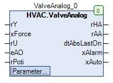

ValveAnalog (FB)¶
FUNCTION_BLOCK ValveAnalog
Short Description¶
Control of a continuous valve drive with anti-lock function and continuous position feedbackTypical application: Control valve in a heating circuit
Portrayal¶

Interfaces¶
Inputs¶
Name Datatype
Range
Init-Value
Functional Description
rY REAL Control signal off Regulation
xForce BOOL FALSE Forced override after manual override
rU REAL 0.0 Position feedback from the control valve
eAO HVACTYPES.eManNum HVACTYPES.eManNum.Auto, HVACTYPES.eManNum.Man HVACTYPES.eManNum.Auto Feedback - Automatic operation
rPoti REAL Feedback - Control signal from hardware manual level
Outputs¶
Name Datatype
Range
Init-Value
Functional Description
rHA REAL Control signal after manual override
rAA REAL Control signal before manual override
dtAbsLastOn DATE_AND_TIME Date / time of the last anti-lock operation
xAlarm BOOL collective alarm message
xAuto BOOL Collective message of Automatic operation
Setpoints / Parameters¶
Name Datatype
Range
Init-Value
Functional Description
udiControlTime UDINT 0 ... 600s 180s Duration of position monitoring
rControlDiff REAL 7.0% Monitoring of the valve position: Maximum position deviation
xControl BOOL TRUE Enabling position monitoring
xForceOption BOOL TRUE Status of output rHA in state forced override
rAbsMaxLimit REAL 100.0 Upper limit value for the control signal before manual override
rAbsMinLimit REAL 0.0 Lower limit value for the control signal before manual override
udiAbsTime UDINT 10s ... 600s 180s Duration of anti-lock operation
tAbsStartTime TOD 00:00:00 - 23:59:59 o’clock
08:00:00 o’clock
Time point of anti-lock operation
eAbsDay eDoW eDow.Inactive, eDoW.Monday ... eDoW.Sunday eDoW.Monday Weekday of the anti-lock operation
rManValue REAL 0.0 Manual override: Hand value
eManModeN eMANNUM eMANNUM.Auto, eMANNUM.Man Manual override: Operating mode
Functional Description¶
rAA control signal before manual override¶
rHA control signal after manual override¶
eManModeN anti-lock process
xForce xForceOption rHA Notes
eMANNUM.Auto FALSE FALSE X rY Automatic operation with passive anti-lock process
eMANNUM.Auto TRUE FALSE X Output of the anti-lock process
Automatic operation with active anti-lock process
eMANNUM.Man X FALSE X rManValue manual override
X X TRUE FALSE 0.0 Forced override 0.0%
X X TRUE TRUE 100.0 Forced override 100.0%
position monitoring¶
rU position feedback from the control valve¶
Anti-lock module¶
Collective message automatic mode xAuto¶
Forced override xForce¶
Visualization¶
Codesys¶
- InOut:
Scope Name Type Initial Comment Input rY REAL Control signal off Regulation
xForce BOOL FALSE Forced override after manual override
rU REAL 0 Position feedback from the control valve
eAO eManNum HVACTYPES.eManNum.Auto Feedback - Automatic operation
rPoti REAL Feedback - Control signal from hardware manual level
Output rHA REAL Control signal after manual override
rAA REAL Control signal before manual override
dtAbsLastOn DT Date / time of the last anti-lock operation
xAlarm BOOL Collective alarm
xAuto BOOL Collective message of Automatic operation
Input udiControlTime UDINT 200 Duration of position monitoring
rControlDiff REAL 7 Monitoring of the valve position: Maximum position deviation
xControl BOOL TRUE Enabling position monitoring
xForceOption BOOL TRUE Status of output rHA in state forced override
rAbsMaxLimit REAL 100 Upper limit value for the control signal before manual override
rAbsMinLimit REAL 0 Lower limit value for the control signal before manual override
udiAbsTime UDINT 180 Duration of anti-lock operation
todAbsStartTime TOD TIME_OF_DAY#8:0 Time point of anti-lock operation
eAbsDay eDoW eDow.Monday Weekday of the anti-lock operation
rManValue REAL 0 Manual override: Hand value
eManModeN eMANNUM eMANNUM.Auto Manual override: Operating mode